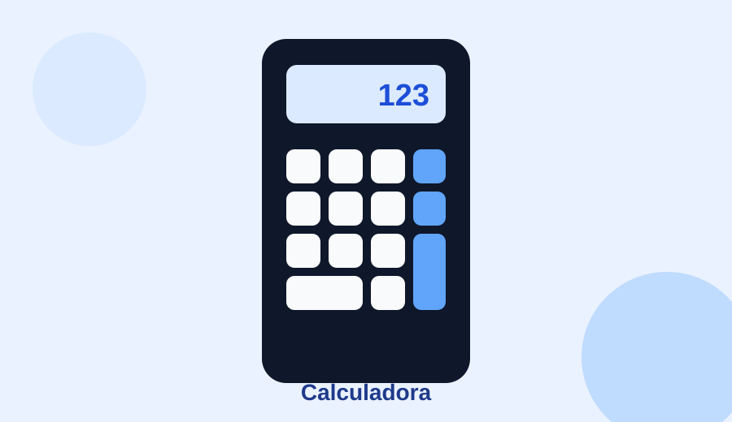
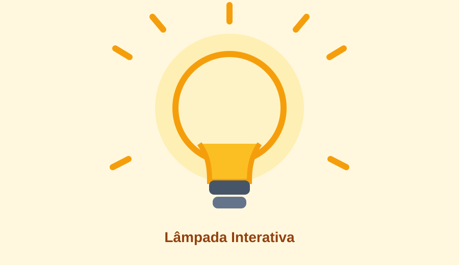
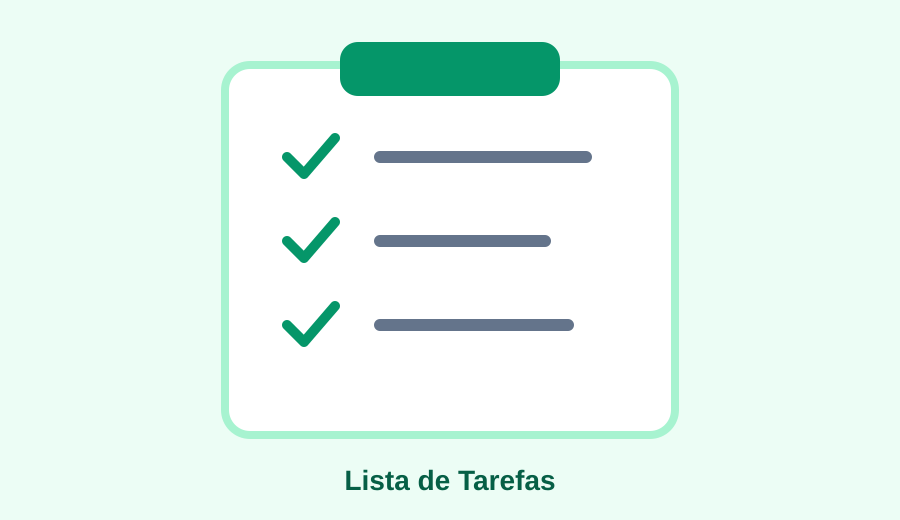
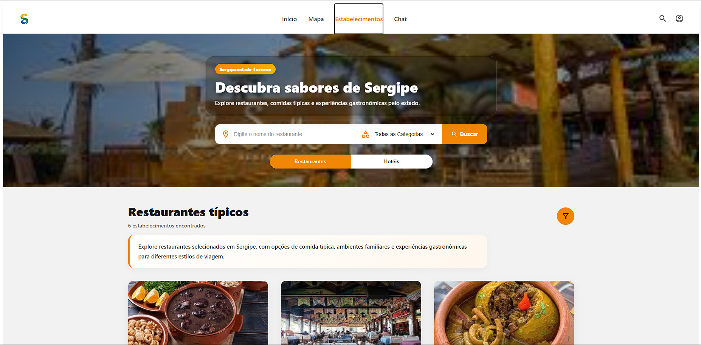
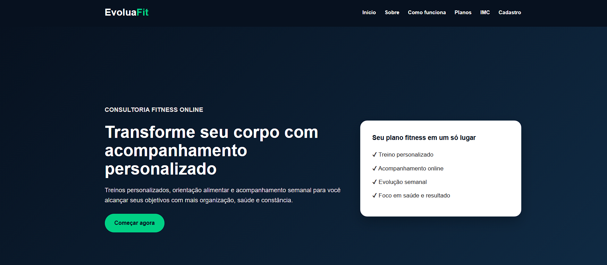
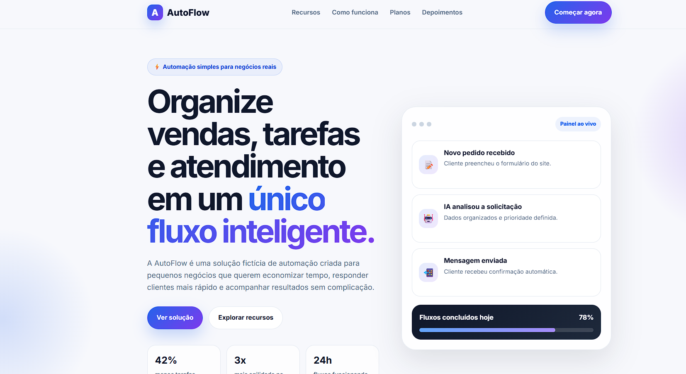

Calculadora
Calculadora interativa desenvolvida para realizar operações matemáticas básicas, aplicando eventos de clique, tratamento de valores e atualização dinâmica da interface.
Portfólio Pessoal
Desenvolvo interfaces, landing pages e soluções digitais com foco em organização, estética, responsividade e funcionalidade.
Sobre mim
Sou estudante de Sistemas de Informação e tenho formação técnica em Informática para Internet. Minha trajetória começou na área de suporte de TI, onde desenvolvi uma base prática em tecnologia, organização, resolução de problemas e atendimento a usuários.
Atualmente, direciono meus estudos para desenvolvimento web, automação e design de interfaces. Tenho interesse em criar páginas modernas, funcionais e bem estruturadas, unindo estética, tecnologia e boa experiência para o usuário.
Também venho desenvolvendo noções de prototipação, organização visual e criação de interfaces utilizando ferramentas como Figma, WordPress, Elementor e tecnologias front-end.
Portfólio
Projetos acadêmicos e práticos desenvolvidos durante minha formação, com foco em HTML, CSS, JavaScript, responsividade e experiência do usuário.
Última unidade
Atividades desenvolvidas para praticar manipulação do DOM, eventos, lógica de programação e criação de interfaces interativas.

Calculadora interativa desenvolvida para realizar operações matemáticas básicas, aplicando eventos de clique, tratamento de valores e atualização dinâmica da interface.

Aplicação que permite ligar, desligar e interagir com uma lâmpada virtual. O projeto trabalha manipulação de elementos, imagens e eventos no navegador.

Lista de tarefas criada para adicionar e organizar atividades. O exercício utiliza eventos, criação dinâmica de elementos e atualização do conteúdo exibido ao usuário.
Jogo simples desenvolvido para exercitar lógica condicional e interação com o usuário. A interface apresenta o resultado conforme as escolhas realizadas durante a partida.
Projetos complementares
Projetos adicionais que demonstram minha evolução em desenvolvimento web, interfaces e automação.

Projeto acadêmico em desenvolvimento de uma interface web/app voltada ao turismo em Sergipe. A aplicação possui páginas de login, home, mapa e estabelecimentos, com foco em organização visual, navegação, cards de locais turísticos e identidade regional.
Em desenvolvimento
Landing page acadêmica para consultoria fitness online, desenvolvida com foco em apresentação de serviço, organização visual, responsividade, seções informativas e experiência do usuário.

Landing page desenvolvida para apresentar uma solução de automação digital, com foco em organização de vendas, tarefas e atendimento. O projeto explora estrutura visual moderna, chamada para ação, apresentação de recursos e proposta de valor.
Habilidades
Ferramentas
Tecnologias e plataformas que fazem parte dos meus estudos e projetos práticos.
Prototipação, wireframes e organização visual de interfaces.
Criação de páginas, landing pages e estruturação visual com CMS.
Construção visual de páginas com foco em layout e responsividade.
Automação de fluxos, formulários, e-mail e integrações digitais.
Ambiente principal para desenvolvimento front-end.
Versionamento, organização e publicação de projetos.
Organização de tarefas e acompanhamento de projetos.
Ferramentas no-code em fase de estudo e exploração.
Contato
Entre em contato pelo formulário ou pelos canais abaixo.